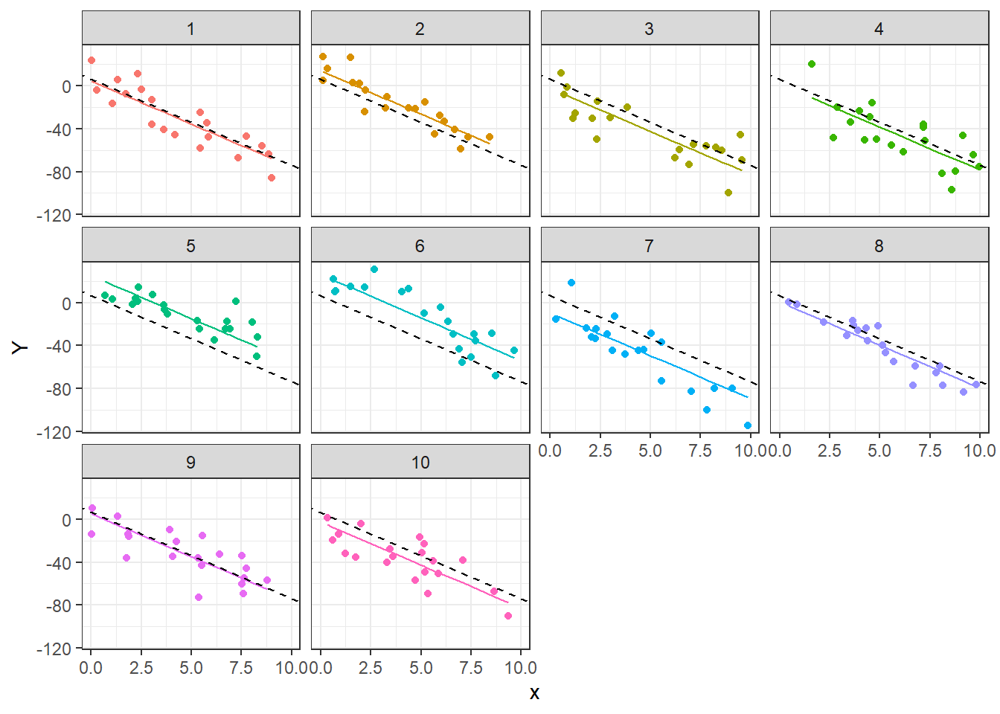
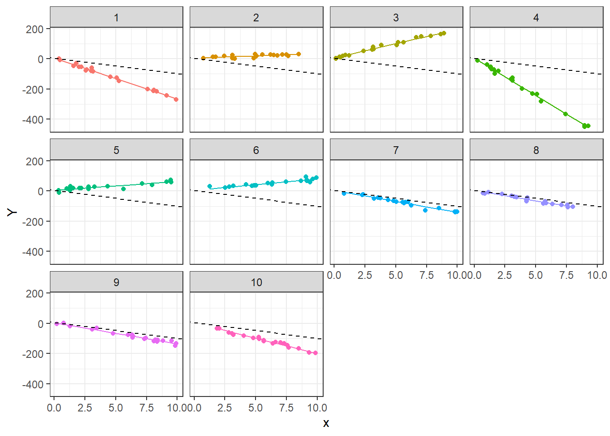
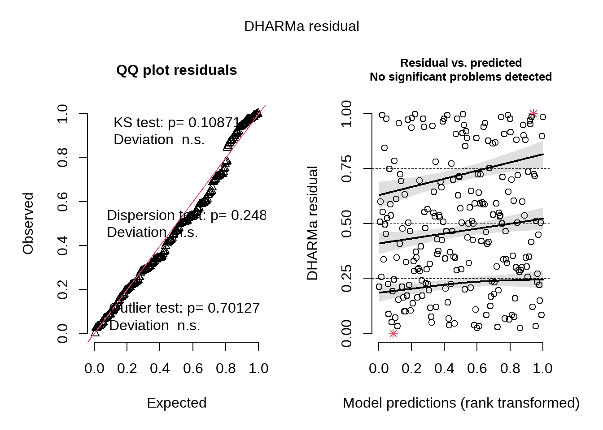

21 Paquete gamlss
El paquete gamlss de Stasinopoulos and Rigby (2022) se utiliza para estimar modelos en los que la variable respuesta puede tener casi cualquier distribución. Al visitar este enlace se encontrará la página de apoyo del paquete, allí se puede consultar el manual de referencia.
El objetivo de este capítulo es mostrar la forma de ajustar un modelo mixto con gamlss y cómo obtener las estimaciones de los efectos fijos y las componentes de varianza.
getSmo( ).
21.1 Modelo lineal mixto con intercepto aleatorio
En esta sección se muestra cómo extraer los efectos fijos y la varianza del intercepto aleatorio con gamlss
Ejemplo
Simular \(n_i=20\) observaciones para \(G=10\) grupos del siguiente modelo. Luego estimar los parámetros del modelo con gamlss.
\[\begin{align*} y_{ij} | b_0 &\sim N(\mu_{ij}, \sigma^2_y) \\ \mu_{ij} &= 5 - 8 x_{ij} + b_{0i} \\ \sigma^2_y &= 15^2 \\ b_{0} &\sim N(0, \sigma^2_{b0}=10^2) \\ x_{ij} &\sim U(0, 10) \end{align*}\]
El código para simular los datos se muestra a continuación.
gen_dat_b0 <- function(G, ni, beta0, beta1, sigma, sigmab0) {
group <- rep(1:G, each=ni)
b0 <- rep(rnorm(n=G, mean=0, sd=sigmab0), each=ni)
x <- runif(n=G*ni, min=0, max=10)
mu <- beta0 + beta1 * x + b0
y <- rnorm(n=G*ni, mean=mu, sd=sigma)
data.frame(group=group, x=x, y=y)
}
G <- 10
ni <- 20
beta0 <- 5
beta1 <- -8
sigma <- 15
sigmab0 <- 10
theta_true <- c(beta0, beta1, sigma, sigmab0)
set.seed(5734)
datos <- gen_dat_b0(G, ni, beta0, beta1, sigma, sigmab0)Para dibujar los datos se utiliza el siguiente código.
library(ggplot2)
ggplot(datos, aes(x, y, color=as.factor(group)) ) +
geom_point() +
labs(colour="Grupo/Cluster")
En el siguiente código se ajustan dos modelos, uno con la función lmer y otro con la función gamlss, el modelo mod1 se utilizará como modelo de referencia para saber qué tan bien gamlss estima los parámetros del modelo.
# con lme
require(lme4)
mod1 <- lmer(y ~ x + (1|group), data=datos)
# con gamlss
require(gamlss)
mod2 <- gamlss(y ~ x + re(random=~1|group), data=datos)## GAMLSS-RS iteration 1: Global Deviance = 1620.721
## GAMLSS-RS iteration 2: Global Deviance = 1620.721A continuación el código para obtener las estimaciones de \(\boldsymbol{\Theta}\) con lmer y gamlss.
vc <- VarCorr(mod1)
vc <- as.data.frame(vc)
theta_lmer <- c(fixef(mod1), vc$sdcor[2:1])
theta_gamlss <- c(coef(mod2)[1:2],
exp(coef(mod2, what='sigma')),
as.numeric(VarCorr(getSmo(mod2))[1, 2]))
cbind(theta_true, theta_lmer, theta_gamlss)## theta_true theta_lmer theta_gamlss
## (Intercept) 5 6.334338 6.333258
## x -8 -8.032004 -8.031778
## 15 14.286254 13.913564
## 10 12.268947 11.595726De la salida anterior vemos que las estimaciones con lmer y gamlss son similares y cercanas a \(\boldsymbol{\Theta}\).
Para finalizar el ejercicio, vamos a mostrar las curvas estimadas para cada grupo usando los resultados del modelo mod1.
datos$pred_y <- predict(mod1) # Para obtener y_hat
ggplot(data = datos, aes(x = x, y = pred_y, color = as.factor(group))) +
geom_line() +
geom_point(aes(x = x, y = y, color = as.factor(group))) +
geom_abline(intercept = fixef(mod1)[1],
slope = fixef(mod1)[2],
color = "black",
linetype = "dashed",
linewidth = 0.5) +
theme_bw() +
facet_wrap(~ group) +
theme(legend.position = "none") + labs(y = "Y")
En la figura anterior tenemos un pánel para cada grupo, dentro de ese pánel están los puntos y dos líneas. La línea negra a trazos representa el modelo general con ecuación \(Y=6.33 + -8.03 x\). La línea de color representa el modelo particular para cada grupo, su ecuación se obtiene de la ecuación general agregando el intercepto aleatorio predicho \(\tilde{b}_0\).
21.2 Modelo lineal mixto con pendiente aleatoria
En esta sección se muestra cómo extraer los efectos fijos y la varianza de la pendiente aleatoria con gamlss
Ejemplo
Simular \(n_i=20\) observaciones para \(G=10\) grupos del siguiente modelo. Luego estimar los parámetros del modelo con gamlss.
\[\begin{align*} y_{ij} | b_0 &\sim N(\mu_{ij}, \sigma^2_y) \\ \mu_{ij} &= 5 - 3 x_{ij} + b_{0i} \\ \sigma^2_y &= 8^2 \\ b_{0} &\sim N(0, \sigma^2_{b0}=20^2) \\ x_{ij} &\sim U(0, 10) \end{align*}\]
El código para simular los datos se muestra a continuación.
gen.dat <- function(G, ni, beta0, beta1, sigma, sigmab1) {
group <- rep(1:G, each=ni)
b1 <- rep(rnorm(n=G, mean=0, sd=sigmab1), each=ni)
x <- runif(n=G*ni, min=0, max=10)
mu <- beta0 + beta1 * x + b1 * x
y <- rnorm(n=G*ni, mean=mu, sd=sigma)
data.frame(group=group, x=x, y=y)
}
G <- 10
ni <- 20
beta0 <- 5
beta1 <- -3
sigma <- 8
sigmab1 <- 20
theta_true <- c(beta0, beta1, sigma, sigmab1)
set.seed(1234)
datos <- gen.dat(G, ni, beta0, beta1, sigma, sigmab1)Para dibujar los datos se utiliza el siguiente código.
library(ggplot2)
ggplot(datos, aes(x, y, color=as.factor(group)) ) +
geom_point() +
labs(colour="Grupo/Cluster")
De la figura anterior se observa claramente la pendiente aleatoria.
En el siguiente código se ajustan dos modelos, uno con la función lmer y otro con la función gamlss, el modelo mod1 se utilizará como modelo de referencia para saber qué tan bien gamlss estima los parámetros del modelo.
# con lme
require(lme4)
mod1 <- lmer(y ~ x + (-1 + x|group), data=datos)
# con gamlss
require(gamlss)
mod2 <- gamlss(y ~ x + re(random=~-1+x|group), data=datos)## GAMLSS-RS iteration 1: Global Deviance = 1397.157
## GAMLSS-RS iteration 2: Global Deviance = 1397.157A continuación el código para obtener las estimaciones de \(\boldsymbol{\Theta}\) con lmer y gamlss.
vc <- VarCorr(mod1)
vc <- as.data.frame(vc)
theta_lmer <- c(fixef(mod1), vc$sdcor[2:1])
theta_gamlss <- c(coef(mod2)[1:2],
exp(coef(mod2, what='sigma')),
as.numeric(VarCorr(getSmo(mod2))[1, 2]))
cbind(theta_true, theta_lmer, theta_gamlss)## theta_true theta_lmer theta_gamlss
## (Intercept) 5 4.730389 4.997051
## x -3 -10.434355 -10.639911
## 8 8.184410 7.956222
## 20 19.946959 18.924090De la salida anterior vemos que las estimaciones con lmer y gamlss son similares y cercanas a \(\boldsymbol{\Theta}\).
Para finalizar el ejercicio, vamos a mostrar las curvas estimadas para cada grupo usando los resultados del modelo mod1.
datos$pred_y <- predict(mod1) # Para obtener y_hat
ggplot(data = datos, aes(x = x, y = pred_y, color = as.factor(group))) +
geom_line() +
geom_point(aes(x = x, y = y, color = as.factor(group))) +
geom_abline(intercept = fixef(mod1)[1],
slope = fixef(mod1)[2],
color = "black",
linetype = "dashed",
linewidth = 0.5) +
theme_bw() +
facet_wrap(~ group) +
theme(legend.position = "none") + labs(y = "Y")
En la figura anterior tenemos un pánel para cada grupo, dentro de ese pánel están los puntos y dos líneas. La línea negra a trazos representa el modelo general con ecuación \(Y=4.73 + -10.43 x\). La línea de color representa el modelo particular para cada grupo, su ecuación se obtiene de la ecuación general agregando la pendiente aleatoria predicha \(\tilde{b}_1\).
21.3 Modelo lineal mixto con intercepto y pendiente aleatoria
En esta sección se muestra cómo extraer los efectos fijos y la varianza del intercepto y de la pendiente aleatoria con gamlss
Ejemplo
Simular \(n_i=30\) observaciones para \(G=20\) grupos del siguiente modelo. Luego estimar los parámetros del modelo con gamlss.
\[\begin{align*} y_{ij} | b_0, b_1 &\sim N(\mu_{ij}, \sigma) \\ \mu_{ij} &= 5 - 3 x_{ij} + b_{0i} + b_{1i} x_{ij} \\ \sigma &= 8 \\ \left ( \begin{matrix} b_{0} \\ b_{1} \end{matrix} \right ) &\sim N\left ( \left [ \begin{matrix} 0 \\ 0 \end{matrix} \right ], \left [ \begin{matrix} \sigma^2_{b0}=40 & \sigma_{b01}=-3 \\ \sigma_{b01}=-3 & \sigma^2_{b1}=50 \end{matrix} \right ] \right ) \\ x_{ij} &\sim U(0, 10) \end{align*}\]
El código para simular los datos se muestra a continuación.
gen.dat <- function(G, ni, beta0, beta1, sigma,
sigma2b0, sigma2b1, covb0b1) {
group <- rep(1:G, each=ni)
library(MASS) # Libreria para simular obs de Normal bivariada
Sigma <- matrix(c(sigma2b0, covb0b1, # Matriz de var-cov
covb0b1, sigma2b1), ncol=2, nrow=2)
b <- mvrnorm(n=G, mu=rep(0, 2), Sigma=Sigma) # Simulando b0 y b1
b <- apply(b, MARGIN=2, function(c) rep(c, each=ni)) # Replicando
b0 <- as.vector(b[, 1]) # Separando los b0
b1 <- as.vector(b[, 2]) # Separando los b1
x <- runif(n=G*ni, min=0, max=10)
mu <- beta0 + beta1 * x + b0 + b1 * x
y <- rnorm(n=G*ni, mean=mu, sd=sigma)
data.frame(group=group, x=x, y=y)
}
G <- 20
ni <- 30
beta0 <- 5
beta1 <- -3
sigma <- 8
sigma2b0 <- 40
sigma2b1 <- 50
covb0b1 <- -3
theta_true <- c(beta0, beta1, sigma,
sigma2b0, sigma2b1, covb0b1)
set.seed(123)
datos <- gen.dat(G, ni, beta0, beta1, sigma,
sigma2b0, sigma2b1, covb0b1)Para dibujar los datos se utiliza el siguiente código.
library(ggplot2)
ggplot(datos, aes(x, y, color=as.factor(group)) ) +
geom_point() +
labs(colour="Grupo/Cluster")
De la figura anterior se observa claramente la pendiente aleatoria.
En el siguiente código se ajustan dos modelos, uno con la función lmer y otro con la función gamlss, el modelo mod1 se utilizará como modelo de referencia para saber qué tan bien gamlss estima los parámetros del modelo.
# con lme
require(lme4)
mod1 <- NULL
mod1 <- lmer(y ~ x + (1 + x|group), data=datos)
# con gamlss
require(gamlss)
mod2 <- NULL
mod2 <- gamlss(y ~ x + re(random=~1+x|group), data=datos)## GAMLSS-RS iteration 1: Global Deviance = 4163.48
## GAMLSS-RS iteration 2: Global Deviance = 4163.48A continuación el código para obtener las estimaciones de \(\boldsymbol{\Theta}\) con lmer y gamlss.
# Para mod1
vc <- VarCorr(mod1)
vc <- as.data.frame(vc)
hat_sig2_b0 <- vc[1, 4]
hat_sig2_b1 <- vc[2, 4]
hat_cov_b0b1 <- vc[3, 4]
hat_sigma <- vc[4, 5]
theta_lmer <- c(fixef(mod1), hat_sigma,
hat_sig2_b0, hat_sig2_b1, hat_cov_b0b1)
# Para mod2
aux <- getSmo(mod2)
aux <- getVarCov(aux)
hat_sig2_b0 <- aux[1, 1]
hat_sig2_b1 <- aux[2, 2]
hat_cov_b0b1 <- aux[1,2]
hat_sigma <- getSmo(mod2)$sigma
theta_gamlss <- c(coef(mod2)[1:2],
exp(coef(mod2, what='sigma')),
hat_sig2_b0,
hat_sig2_b1,
hat_cov_b0b1)
cbind(theta_true, theta_lmer, theta_gamlss)## theta_true theta_lmer theta_gamlss
## (Intercept) 5 4.364926 7.483375
## x -3 -1.751678 -2.388683
## 8 8.008558 7.772782
## 40 28.319670 26.334740
## 50 48.953770 46.894005
## -3 -5.042857 -4.752448De la salida anterior vemos que las estimaciones con lmer y gamlss son similares y cercanas a \(\boldsymbol{\Theta}\).
Para finalizar el ejercicio, vamos a mostrar las curvas estimadas para cada grupo usando los resultados del modelo mod1.
datos$pred_y <- predict(mod1) # Para obtener y_hat
ggplot(data = datos, aes(x = x, y = pred_y, color = as.factor(group))) +
geom_line() +
geom_point(aes(x = x, y = y, color = as.factor(group))) +
geom_abline(intercept = fixef(mod1)[1],
slope = fixef(mod1)[2],
color = "black",
linetype = "dashed",
linewidth = 0.5) +
theme_bw() +
facet_wrap(~ group) +
theme(legend.position = "none") + labs(y = "Y")
En la figura anterior tenemos un pánel para cada grupo, dentro de ese pánel están los puntos y dos líneas. La línea negra a trazos representa el modelo general con ecuación \(Y=4.36 + -1.75 x\). La línea de color representa el modelo particular para cada grupo, su ecuación se obtiene de la ecuación general agregando el intercepto y la pendiente aleatoria predichos \(\tilde{b}_0\) y \(\tilde{b}_1\).